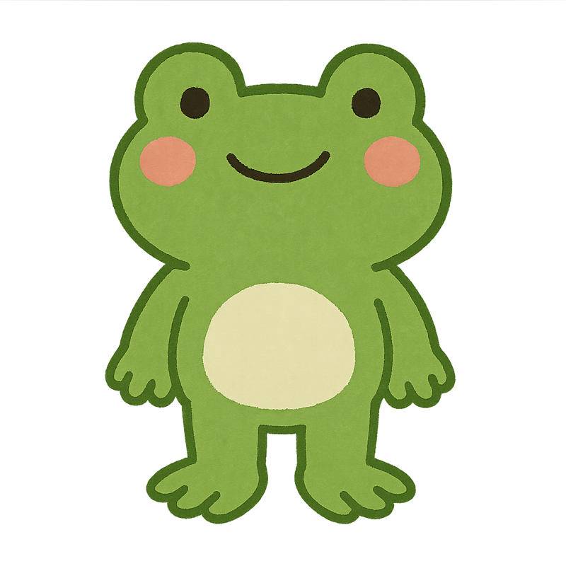

Languages
- Java / Kotlin / Python
- TypeScript for tool automation
- SQL, PL/pgSQL

About Me
개구리는 개울가 속 올챙이에서 육지로 나아가기 위해 성장과 변화를 겪고 더 넓은 환경에 적응하게 되는 동물입니다. 저는 이러한 개구리의 성장 과정처럼 나아가고자 합니다. 현재에 안주하지 않고, 더 나은 개발자가 되기 위해 기존 시스템을 개선하는 데 끊임없이 고민하고 적극적으로 다가갑니다. 또한, 새로운 기술을 습득하고 적용해보는 도전을 즐깁니다. 복잡한 문제나 난관을 만나면 그것을 성장의 발판으로 삼아 해결 방법을 모색하며 새로운 환경에 차근차근 적응해 갑니다. 더 넓은 세계를 탐험하기 위한 개구리의 성장처럼, 변화를 두려워하지 않고 끊임없는 학습과 자기 개발을 통해 항상 발전하는 개발자를 목표로 합니다.
Capabilities
Selected Work
실시간 거래 정산 파이프라인
Kafka · Kotlin · Redis사용량 기반 청구 시스템
Spring Boot · Batch모니터링·알림 플랫폼
FastAPI · GrafanaCareer Path
2022.10 - 현재
정산/정책 도메인 총괄. 시스템 리디자인, 데이터 파이프라인, MSA 전환을 이끌고 플랫폼 안정성을 높였습니다.
2020.02 - 2022.09
멀티 리전에 걸친 주문/결제 시스템을 설계하며 확장 가능한 마이크로 서비스 구조를 만들었습니다.
2019.06 - 2020.01
사내 배포 자동화와 모니터링 도구를 구현하며 DevOps 마인드를 다졌습니다.